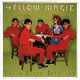
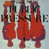
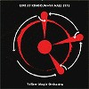
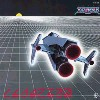
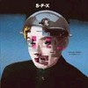

strange music page
japanese strange music * * * ymo
#個人的にはYMOで一番好きなアルバムです。テクノポップなりかけ、その中途半端なフュージョン具合がとても好き。
- COMPUTER GAME "Theme from the Circus"
- FIRECRACKER
- SIMOON
- COSMIC SURFIN'
- COMPUTER GAME "Teme from the Invader"
- TONG POO (東風)
- LA FEMME CHINOISE (中国女)
- BRIDGE OVER TROUBLED MUSIC
- MAD PIERROT
- ACROBAT
- 高橋幸宏 (drums,percussions,electronics,vocals)
- 細野晴臣 (bass,electronics,keyboards)
- 坂本龍一 (keyboards,electronics,percussion,orchestration)
- 松武秀樹 (micro computer programming)
- Hashimoto Shunichi (vocals on 3.)
- 高中正義 (guitars on 3.7.)
- Nunoi Tomoko (voice on 7.)
ALFA RECORDS: ALCA-286 (1978.11.25)

- TECHNOPOLIS
- ABSOLUTE EGO DANCE
- RYDEEN
- CASTALIA
- BEHIND THE MASK
- DAY TRIPPER
- INSOMNIA
- SOLID STATE SURVIVOR
- 細野晴臣
- 坂本龍一
- 高橋幸宏
- 松武秀樹 (programming)
- SANDII (voices on 2.)
- Ayukawa Makoto (guitars on 6.8.)
ALFA RECORDS: ALCA-288 (1979.9.25)

- RYDEEN
- SOLID STATE SURVIVOR
- TONG POO
- THE END OF ASIA
- COSMIC SURFIN'
- DAY TRIPPER
- RADIO JUNK
- LA FEMME CHINOISE
- BACK IN TOKYO
- 細野晴臣 (bass)
- 坂本龍一 (keyboards)
- 高橋幸宏 (drums,vocals)
- 松武秀樹 (programming)
- 矢野顕子 (keyboards,backing vocals)
ALFA RECORDS: ALCA-9040
- BALLET
- MUSIC PLANS (音楽の計画)
- RAP PHENOMINA (ラップ現象)
- HAPPY END
- 1000 KNIVES (千のナイフ)
- CUE
- U.T.
- CAMOUFLAGE
- MASS
- LOON (来るべきもの)
ALFA REORDS: ALCA-291 (1981.3.31)
- PURE JAM
- NEUE TANZ (新舞踊)
- STAIRS (階段)
- SEOUL MUISC (京城音楽)
- LIGHT IN DARKNESS (灯)
- TAISO (体操)
- GRADATED GREY (灰色の段階)
- KEY (手掛かり)
- PROLOGUE (前奏)
- EPILOGUE (後奏)
ALFA RECORDS: ALCA-292 (1981.11.21)
- PROPAGANDA
- 東風 (TONG POO)
- BEHIND THE MASK
- SOLID STATE SURVIVOR
- 中国女 (LA FEMME CHINOISE)
- ONGAKU
- BALLET
- WILD AMBITIONS
- 希望の河 (EXPECTING RIVERS)
- KEY
- TECHNOPOLIS
- RYDEEN
- 以心電信 (YOU'VE GOT TO HELP YOURSELF)
- 過激な淑女
- 君に胸キュン -浮気なヴァカンス-
- FIRECRACKER
- 高橋幸宏
- 細野晴臣
- 坂本龍一
- David Palmer
ALFA MUSIC: ALCA-9048

- FIRECRACKER
- BEHIND THE MASK
- LA FEMME CHINOISE (中国女)
- TONG POO (東風)
- PLASTIC BAMBOO
- THE END OF ASIA
- COSMIC SURFIN
- WANTED
- 1000 KNIVES
- 細野晴臣
- 坂本龍一
- 高橋幸宏
- 松武秀樹
- 渡辺香津美
ALFA MUSIC: ALCA-9052
#これ出た頃は「？」だったけど、今聴くとミョーに気持ちイイ。
- BE A SUPERMAN
- NANGA DEF?
- FLOATING AWAY
- DOLPHINICITY
- HI-TECH HIPPIES
- I TRE MERLI
- NOSTALGIA
- SILENCE OF TIME
- WATERFORD
- O.K.
- CHANGE
- POCKETFUL OF RAINBOWS
- 細野晴臣
- 坂本龍一
- 高橋幸宏
- William Baroughs (vox on 1.6.)
- Kamiya Ruriko (vox on 1.8.)
- John C.Lilly (vox on 4.)
- William Gibson (away-vox on 5.)
- Tokutake Hirofumi (guitars on 5.)
東芝EMI: TOCT-8010 (1993.5.26)
#サイコー。
- differencia
- thatness and thereness
- participation mystique
- E-3A
- iconic storage
- riot in Lagos
- not the 6 o'clock news
- the end of europe
- 坂本龍一
- Andy Partridge
- 大村憲司
- Kumihara Tadashi
- 松武秀樹
ALFA RECORDS: 32XA-230
- Broadway Boogie Woogie
- 黄土高原
- Ballet Mecanique
- G.T.II
- Milan, 1909
- Variety Show
- 大航海 Verso lo schermo
- Water is Life
- Parolibre
- G.T.
- 坂本龍一
- Maceo Parker Jr. (alto sax on 1.)
- Bernard Fowler (vocals)
- 吉田美奈子 (vocals,backing vocals)
- 窪田晴男 (guitars)
- Suzuki Kenji (guitar solo)
- Arto Lindsay (electric guitar on 9.)
- かの香織 (vocals on 7.)
MIDI: MDCZ-1095 (1986)
#これ、高校生の頃に欲しくて欲しくてしょーがなかったCD(になってなかった、その頃は)だったので、思わず飛びつきで買っちゃいました。ほぼ原音のままなんですけど、この音色がたまらないです、ゼビウスなんか聞いちゃったらもう頭は小学生くらいに戻っちゃいます。
普通のゲームミュージックのCDとはなんだか考え方が違っていて、アレンジしなおしたり演奏しなおしたりしたモノではなく、ゲーム中の効果音を組み合わせて聴けるモノにしているのが面白いです。
ライナーの裏に筐体からライン引っ張ってミキサーに突っ込んでる細野さんの写真が有ります、すばらしい。ゲームミュージック好きな人には有名なレコード(結構高価で取り引きされてたみたい)ですけど、そーでなくても面白いかも。
ちなみに続編「スーパーゼビウス」もCD化だとか。

- XEVIOUS
- BASCONIAN
- PAC-MAN
- PHOZON
- MAPPY
- LIBBLE RABBLE
- POLE POSITION
- NEW RALLY-X
- DIG DUG
- GALAGA
SCITRON DISCS: SCDC-00003 (original release 1984)
#遅れてたんでどーなったかと思ってたら、よーやく再発。上のヤツの続編で当時12インチで出てたヤツです。ヤフーオークションとかでは高値で取り引きされていたみたい。ボーナストラック1曲を加えて、全19分くらい。
細野さんによるSUPER XEVIOUSは、ノンスタンダードから出ていた「S F X」とかに似た雰囲気です。ゼビ語を交えつつ9999999点を目指す...この一曲の為に買ったような。最近のゲームミュージック業界がどーかは知らないですけど、こんな感じので今CD出しても良さそうな出来。
あ、ギャプラスのアレンジも結構緊張感有って良い感じ。ドルアーガの弦アレンジはちょっと「？」な感じでしたけど。
遠藤さん(ゼビウス作った人)の小説「ファーラウド」もきちんと収録されてます。死ぬほど緻密な世界観。やっぱスゴイ...思わずファミコンのゼビウスやってみちゃいましたけど、いまだに遊べます。プレステのつまんないヤツとかよりずっと。
ちなみに
ゲームミュージックばっかのレーベルから出てるみたいですね。ナムコの初期ゲームミュージックは次の「RETURN OF VIDEO GAME MUSIC」を再発して完結。たぶん買います。(2001.10.15)

- SUPER XEVIOUS
- GAPLUS
- TOWER OF DRUAGA
- SUPER XEVIOUS (Gust Notch Mix)
SCITRON DISCS: SCDC-00099 (original release 1985)
- Mercury Fall
- The Animal Opinion
- Incects Insists Incecurity
- The Long Story of A Human Kind
- The First One in Heaven
- Sequential Opera Circuit
- Trembling #1
- The Endless Talking
- Scratched-Szymanowsky-Sampled
- Digitally Sampled Ethnography
- La Pliocena
- Birdoj
- Trembling #2
#84年発、
ノンスタンダードからのミニアルバム。でCDには12インチシングルからのボーナストラックが入ってます（8曲目以降）
YMOから更にボディミュージックとかに接近した感じかな？この頃の近未来無機質テクノも結構好きです。嗚呼80年代みたいな。ライナーの写真では笑えるほどテクノカット。もうこの頃は
はっぴいえんどの面影は微塵も感じないです。

- NON-STANDARD MIXTURE
- BODY SNATCHERS (Special Mix)
- ANDROGENA
- S.F.X.
- STRANGE LOVE
- ALTERNATIVE 3 (第3の選択)
- DARKSIDE OF THE STAR (地球の夜にむけての夜想曲)
- MEDIUM COMPOSITION #1
- MEDIUM COMPOSITION #2
- 3.6.9.
- 細野晴臣
- SANDII (voice on 2.)
- 久保田麻琴 (voice on 2.)
- 越美晴 (background vocal on 3.)
TEICHIKU/Non-STANDARD: TECN-18036 (1984)
TEICHIKU: TECN-18758 (2001.11.22)
#たぶん一生涯好きなアルバム。中学か小学生の時に聞いてからずーっと好きなままです。もちろん宮沢賢治原作、ますむらひろしのアニメ映画のサントラです、この映画も結構好きですけど、やっぱ音の方にひかれていっちゃいました。
- メイン・タイトル
- 幻想四次のテーマ
- 幻想と現実
- 晴れの日
- 星めぐりの歌
- ジョバンニの幻想
- ケンタウルスの星祭り
- 天気輪の柱
- よろこび
- 北十字
- プリオシン海岸
- 幻想の歴史
- 極楽のハープ
- ジョバンニの透明な哀しみ
- 一番のさいわい
- 別離のテーマ
- 走る
- 45分
- 鎮魂歌
- エンド・テーマ「銀河鉄道の夜」
- 細野晴臣
- 越美晴 (piano,chorus)
- 福沢モロ (voice,chorus)
TEICHIKU/Non-STANDARD: TECN-18035
#弟からの借り物.....全然期待してなかったのに、意外と良かったです。ダラダラアンビエントかと思いきや、適度な緊張感のあるエレクトロミュージックでした。よくよくよく考えて見ると二人ともベースの人なんですよね。
- UNFINISHED SCREAMS
- INTERPIECES
- COILED
- JEEPHEAD SHAMAN
- WAKARE MICHI
- Y.S. TANGLED IN TOKYO
- BUSH
TEICHIKU/BAIDIS: TECN-30336 (1996.2.21)
#えーと近所のGEOという店で、\380だったので。(2000.1.21)
- 又会う日まで -GOD BE WITH YOU TILL MEET AGAIN (賛美歌405番)-
- YMO/RYDEEN
- 立花ハジメ/ROCK
- サンディー&サンセッツ/STICKY MUSIC
- ゲルニカ/マロニエ読本
- 越美晴/PETIT PARADIS
- イノヤマランド/POKALA
- 太田蛍一/西安の子供市場
- 上野耕路/ADAGIETO
- 高橋幸宏/IT'S GONNA WORK OUT
- S.E.T./BEAT THE RAP
- テストパターン/MODERN LIVING
- 戸川純/怒涛の恋愛
- インテリア/HAWKS
- 小池玉緒/鏡の中の十月
- 細野晴臣/夢見る約束
- PLASTIC STOCHASTIC/騒音譚詩
ALFA MUSIC: ALCA-9136 (original release 1985.5.25)